6 Raster-vector interactions
Some of the following exercises use a vector (zion_points) and raster dataset (srtm) from the spDataLarge package.
They also use a polygonal ‘convex hull’ derived from the vector dataset (ch) to represent the area of interest:
library(sf)
library(terra)
library(spData)
zion_points_path = system.file("vector/zion_points.gpkg", package = "spDataLarge")
zion_points = read_sf(zion_points_path)
srtm = rast(system.file("raster/srtm.tif", package = "spDataLarge"))
ch = st_combine(zion_points) |>
st_convex_hull() |>
st_as_sf()E1. Crop the srtm raster using (1) the zion_points dataset and (2) the ch dataset.
Are there any differences in the output maps?
Next, mask srtm using these two datasets.
Can you see any difference now?
How can you explain that?
plot(srtm)
plot(st_geometry(zion_points), add = TRUE)
plot(ch, add = TRUE)
srtm_crop1 = crop(srtm, zion_points)
srtm_crop2 = crop(srtm, ch)
plot(srtm_crop1)
plot(srtm_crop2)
srtm_mask1 = mask(srtm, zion_points)
srtm_mask2 = mask(srtm, ch)
plot(srtm_mask1)
plot(srtm_mask2)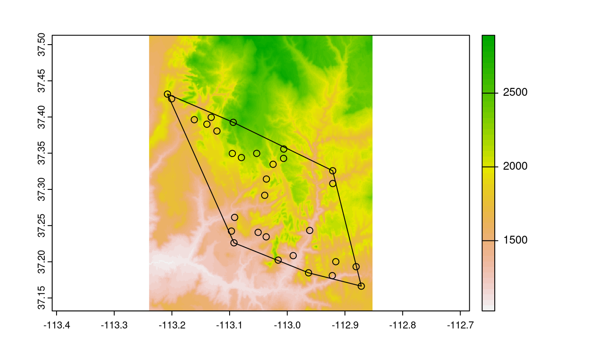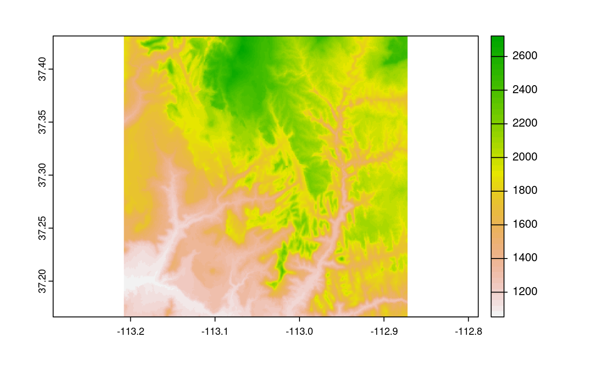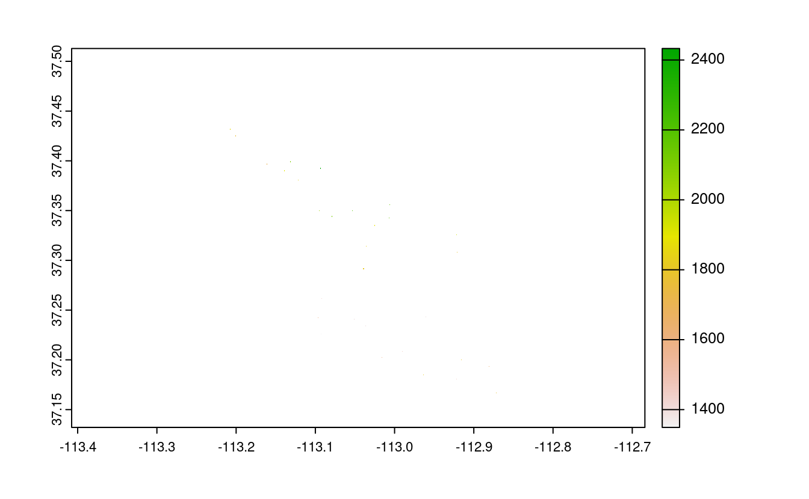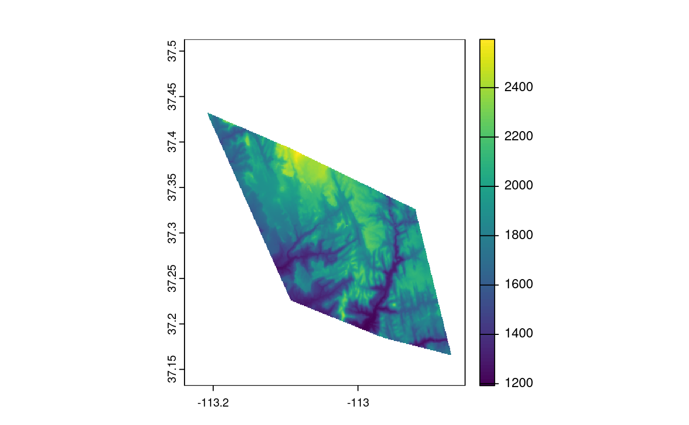
E2. Firstly, extract values from srtm at the points represented in zion_points.
Next, extract average values of srtm using a 90 buffer around each point from zion_points and compare these two sets of values.
When would extracting values by buffers be more suitable than by points alone?
- Bonus: Implement extraction using the exactextractr package and compare the results.
zion_points_buf = st_buffer(zion_points, dist = 90)
plot(srtm)
plot(st_geometry(zion_points_buf), add = TRUE)
plot(ch, add = TRUE)
zion_points_points = extract(srtm, zion_points)
zion_points_buffer = extract(srtm, zion_points_buf, fun = "mean")
plot(zion_points_points$srtm, zion_points_buffer$srtm)
# Bonus
# remotes::install_github("isciences/exactextractr")
# zion_points_buf_2 = exactextractr::exact_extract(x = srtm, y = zion_points_buf,
# fun = "mean")
#
# plot(zion_points_points$srtm, zion_points_buf_2)
# plot(zion_points_buffer$srtm, zion_points_buf_2)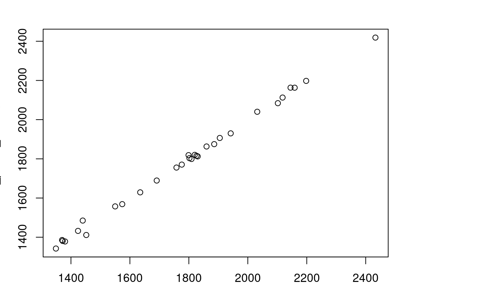
E3. Subset points higher than 3100 meters in New Zealand (the nz_height object) and create a template raster with a resolution of 3 km for the extent of the new point dataset.
Using these two new objects:
- Count numbers of the highest points in each grid cell.
- Find the maximum elevation in each grid cell.
nz_height3100 = dplyr::filter(nz_height, elevation > 3100)
new_graticule = st_graticule(nz_height3100, datum = "EPSG:2193")
plot(st_geometry(nz_height3100), graticule = new_graticule, axes = TRUE)
nz_template = rast(ext(nz_height3100), resolution = 3000, crs = crs(nz_height3100))
nz_raster = rasterize(nz_height3100, nz_template,
field = "elevation", fun = "length")
plot(nz_raster)
plot(st_geometry(nz_height3100), add = TRUE)
nz_raster2 = rasterize(nz_height3100, nz_template,
field = "elevation", fun = max)
plot(nz_raster2)
plot(st_geometry(nz_height3100), add = TRUE) 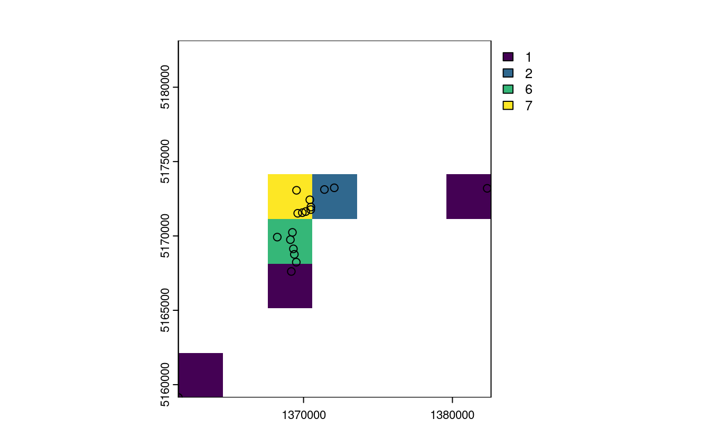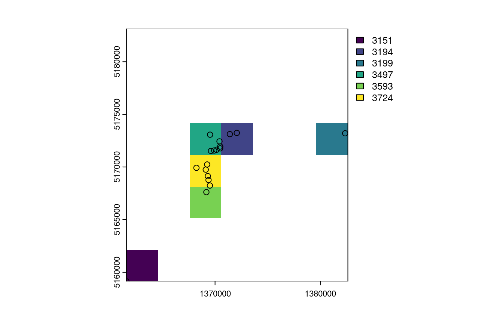
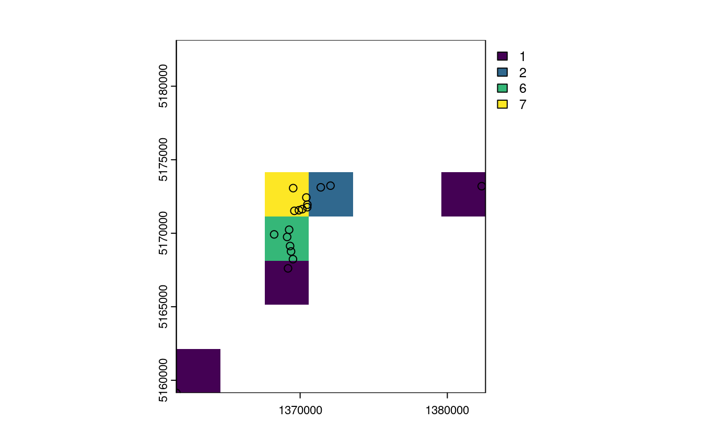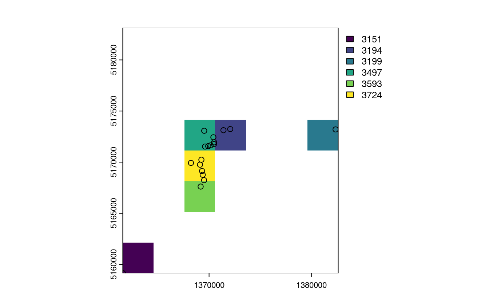
E4. Aggregate the raster counting high points in New Zealand (created in the previous exercise), reduce its geographic resolution by half (so cells are 6 by 6 km) and plot the result.
- Resample the lower resolution raster back to the original resolution of 3 km. How have the results changed?
- Name two advantages and disadvantages of reducing raster resolution.
nz_raster_low = raster::aggregate(nz_raster, fact = 2, fun = sum, na.rm = TRUE)
res(nz_raster_low)
#> [1] 6000 6000
nz_resample = resample(nz_raster_low, nz_raster)
plot(nz_raster_low)
plot(nz_resample) # the results are spread over a greater area and there are border issues
plot(nz_raster)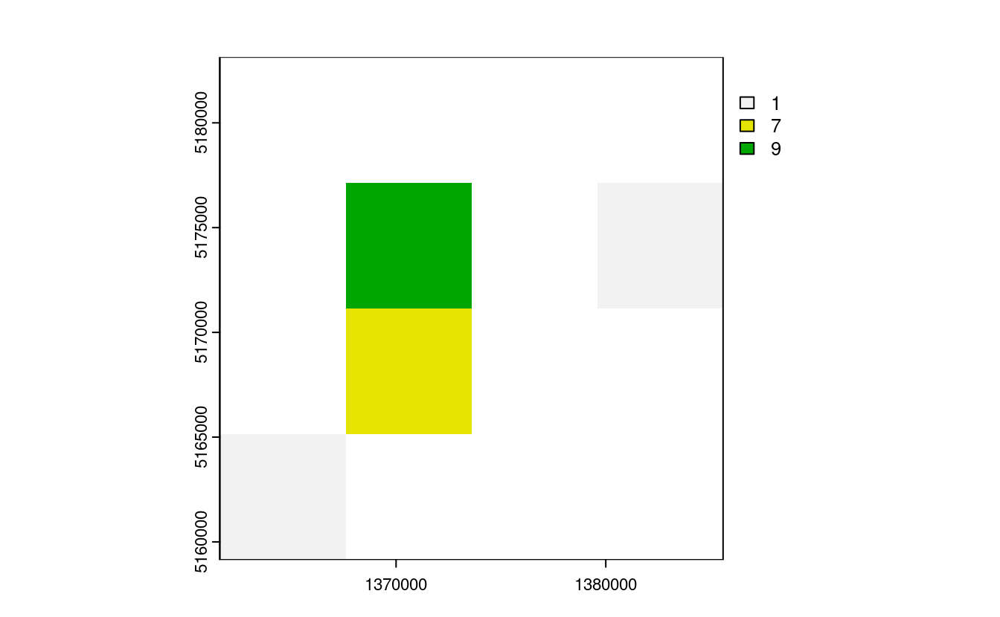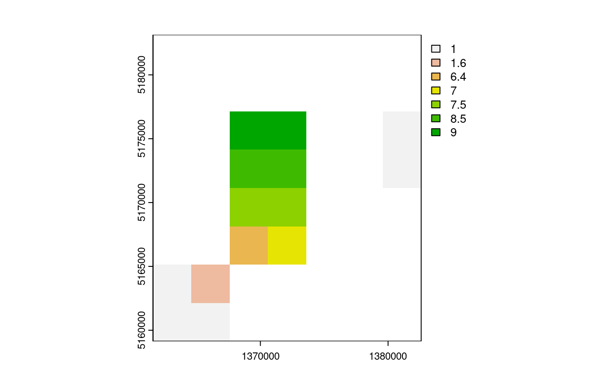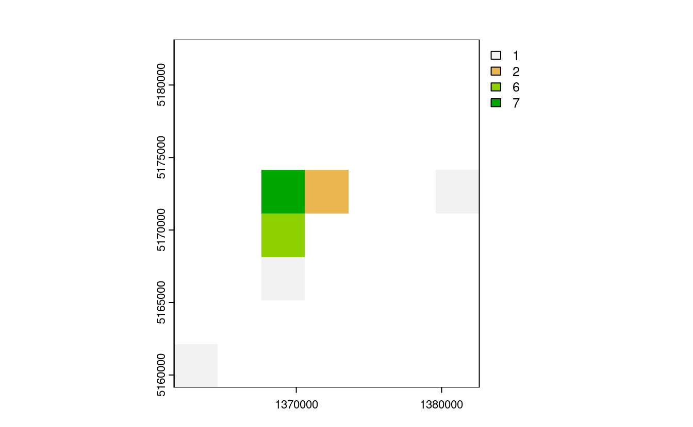
Advantages:
- lower memory use
- faster processing
- good for viz in some cases
Disadvantages:
- removes geographic detail
- adds another processing step
E5. Polygonize the grain dataset and filter all squares representing clay.
grain = rast(system.file("raster/grain.tif", package = "spData"))- Name two advantages and disadvantages of vector data over raster data.
- When would it be useful to convert rasters to vectors in your work?
grain_poly = as.polygons(grain) |>
st_as_sf()
levels(grain)
#> [[1]]
#> value grain
#> 1 0 clay
#> 2 1 silt
#> 3 2 sand
clay = dplyr::filter(grain_poly, grain == "clay")
plot(clay)
Advantages:
- can be used to subset other vector objects
- can do affine transformations and use sf/dplyr verbs
Disadvantages:
- better consistency
- fast processing on some operations
- functions developed for some domains